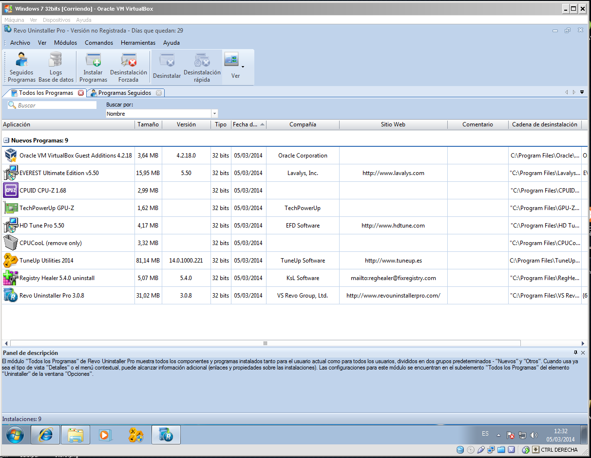
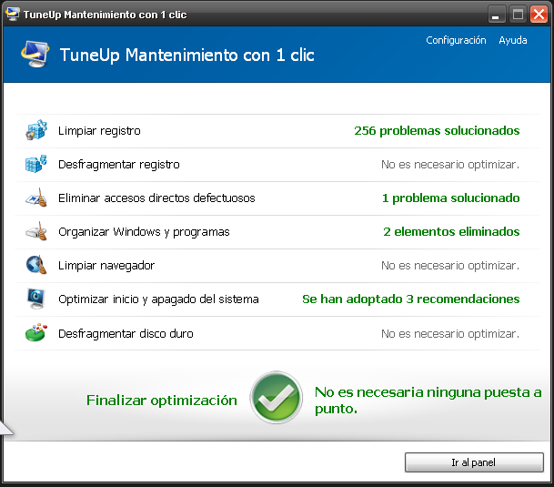
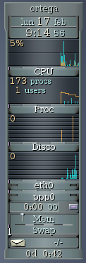
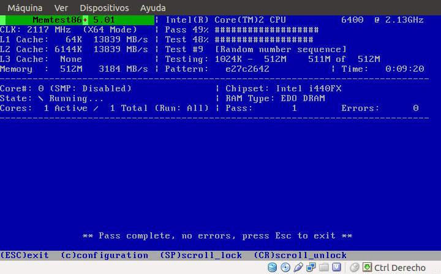
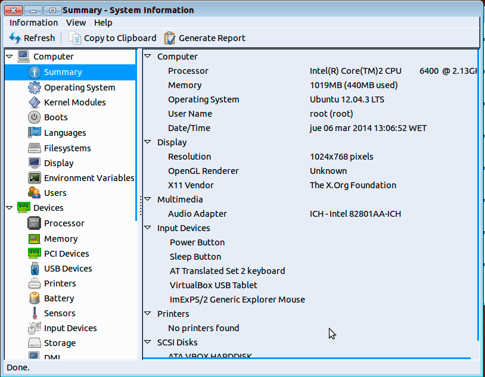

- Módulo: Fundamentos de Hardware
- Título del trabajo: A2: Análisis del rendimiento
- Componentes del grupo: Alejandro Ortega Freire, Ariadna Jiménez Rodríguez, Miguel Ángel González Rodríguez
- Curso Académico: 2013/2014
- Fecha de entrega: 11 de marzo de 2014
NOTA 1: Dado que en la práctica anterior el servidor que estábamos utilizando dejó de funcionar la presente práctica ha sido realizada enteramente con 4 máquinas virtuales, dos con SO Windows y dos con SO GNU/Linux.
1.- Análisis en Windows
1.1.- Sistema Operativo Windows 7
1.1.1.- Características de la máquina.
- Detallar las características de la máquina virtual con Window 7. Para ello se empleó el programa Everest Ultimate Edition 5.5
- Sus principales características son:
- SO: Microsoft Windows 7 Ultimate
- Motherboard: VirtualBox Virtual Platform
- CPU: Intel Core 2 Duo, 2400 MHz
- Arquitectura: 32 bits
- Memoria Principal (RAM): 1024 MB
- Memoria Secundaria: 29,9 GB
- Tarjeta Gráfica: VirtualBox Graphics Adapter (36 MB)
- Placa de sonido: Intel 82801FB(M) ICH6(-M)
- Tarjeta de Red: Intel(R) PRO/1000 MT
Imágenes 1 y 2: Resumen de las características de la máquina con Windows 7.
NOTA 2: Debemos asegurarnos de tener correctamente los drivers de nuestra máquina. Consultar "Administrador de dispositivos".
1.1.2.- Pruebas de rendimiento.
- Aplicar pruebas de rendimiento a la máquina virtual con Window 7.
- Se realizaron las siguientes pruebas:
- Utilidad EVEREST ULTIMATE EDITION 5.5. Se generaron los siguientes informes:
Imágenes 3 y 4: Principio y fin Memtest en Windows 7.
Imágenes 5 a 10: Datos obtenidos con CPU-Z de la máquina con Windows 7.
NOTA 3: GPU-Z permite conocer las características de tarjetas gráficas NVIDIA, ATI e Intel. Dado que la máquina de VirtualBox no dispone de tarjeta gráfica de esas marcas al iniciar el programa éste aparece vacío. Se realizó una prueba de la aplicación en una máquina real con una tarjeta gráfica NVIDIA para comprobar su funcionamiento.

Imágenes 11 y 12: GPU-Z en máquina virtual (izquierda) y prueba en máquina real (derecha).
Imágenes 13 a 20: Batería de pruebas de rendimiento realizadas con HD tune.
NOTA 4: CPUCool no funciona en máquinas virtuales de VirtualBox.
Imagen 21: CPUCool no funciona con VirtualBox.
- Monitorizar rendimiento de CPU, memoria, disco duro. Aparte de las herramientas anteriores en el "Admimistrador de tareas" hay un "Monitor de recursos", además de poder monitorizar el uso de la CPU.
Imagen 22: Monitorización de CPU y recursos.
1.1.3.- Herramientas de optimización.
- Usar las siguientes utilidades de optimización y describir brevemente su cometido:
- Scandisk: es un software que sirve para comprobar tanto la integridad de la superficie física de los discos duros que analiza, como la integridad del sistema de archivos almacenado en ellos.
- Desfragmentador del disco: es un programa incluido en Microsoft Windows diseñado para aumentar la velocidad de acceso al disco mediante la desfragmentación, es decir, la reordenación de los archivos almacenados en un disco de manera que sus pedazos ocupen un espacio contiguo. El objetivo es minimizar el tiempo de movimiento de los cabezales del disco y aumentar al máximo la velocidad de transferencia.
Imágenes 23 y 24: Análisis del disco duro con Scandisk y desfragmentado con el Desfragmentador de disco .
- Utilidad TuneUp Utilities: es un paquete de aplicaciones para optimizar, personalizar y corregir fallos del sistema. Entre otros propósitos, permite desfragmentar el disco duro, eliminar archivos temporales, realizar ajustes automáticos para incrementar la velocidad de navegación en Internet y desfragmentar y corregir errores del registro de Windows.
 Página Oficial.
Página Oficial. Enlace de descarga.
Enlace de descarga.
Imágenes 25 y 26: TuneUp Utilities 2014.
Imagen 27: Panel de control de TuneUp Utilities 2014.
- Utilidad Registry Healer: aplicación que permite escanear el registro del sistema operativo y muestra las entradas no válidas, permitiendo eliminar los elementos obsoletos.
Página Oficial.Enlace de descarga.
Imagen 28: Registry Healer.
- Utilidad Revo Uninstaller Pro: es un programa de desinstalación que globaliza todos los módulos de desinstalación de los programas instalados en una misma ventana.
Página Oficial.Enlace de descarga.

Imagen 29: Revo Uninstaller Pro.
 Principio del Punto 1.1 |
Principio del Punto 1.1 |  Principio del Bloque 1 |
Principio del Bloque 1 |  Fin del punto 1.2 |
Fin del punto 1.2 |  Índice
Índice
1.2.- Sistema Operativo Windows XP
1.2.1.- Características de la máquina.
- Detallar las características de la máquina virtual con Window XP. Para ello se empleó el programa Everest Ultimate Edition 5.5
- Sus principales características son:
- SO: Microsoft Windows XP Professional
- Motherboard: VirtualBox Virtual Platform
- CPU: Intel Core 2 Duo, 2400 MHz
- Arquitectura: 32 bits
- Memoria Principal (RAM): 512 MB
- Memoria Secundaria: 10 GB
- Tarjeta Gráfica: VirtualBox Graphics Adapter (32 MB)
- Placa de sonido: Sigma Tel STAC9700/83/84 Intel 82801AA
- Tarjeta de Red: Adaptador Ethernet PCI AMD PCNET Family

Imágenes 30 y 31: Resumen de las características de la máquina con Windows 7.
1.2.2.- Pruebas de rendimiento.
- Aplicar pruebas de rendimiento a la máquina virtual con Window XP.
- Se realizaron las siguientes pruebas:
- Utilidad EVEREST ULTIMATE EDITION 5.5. Se generaron los siguientes informes:
Imágenes 32 y 33: Principio y fin Memtest en Windows XP.
Imágenes 34 a 39: Datos obtenidos con CPU-Z de la máquina con Windows XP.
- Utilidad GPU-Z. Como en la máquina de Windows 7, al no disponer de tarjeta gráfica NVIDIA, ATI o Intel esta utilidad es innecesaria.
- Utilidad HD tune.
Imágenes 40 a 47: Batería de pruebas de rendimiento realizadas con HD tune.
- Utilidad CPUCool. Como ya se indicó en el anterior punto, CPUCool no funciona en máquinas virtuales de VirtualBox.
- Monitorizar rendimiento de CPU, memoria, disco duro. Aparte de las herramientas anteriores el "Admimistrador de tareas" permite monitorizar el uso de la CPU.
Imagen 48: Monitorización de CPU.
1.2.3.- Herramientas de optimización.
- Usar las siguientes utilidades de optimización y describir brevemente su cometido:
- Scandisk: es un software que sirve para comprobar tanto la integridad de la superficie física de los discos duros que analiza, como la integridad del sistema de archivos almacenado en ellos.
- Desfragmentador del disco: es un programa incluido en Microsoft Windows diseñado para aumentar la velocidad de acceso al disco mediante la desfragmentación, es decir, la reordenación de los archivos almacenados en un disco de manera que sus pedazos ocupen un espacio contiguo. El objetivo es minimizar el tiempo de movimiento de los cabezales del disco y aumentar al máximo la velocidad de transferencia.
Imágenes 49 y 50: Análisis del disco duro con Scandisk y desfragmentado con el Desfragmentador de disco .
- Utilidad TuneUp Utilities: es un paquete de aplicaciones para optimizar, personalizar y corregir fallos del sistema. Entre otros propósitos, permite desfragmentar el disco duro, eliminar archivos temporales, realizar ajustes automáticos para incrementar la velocidad de navegación en Internet y desfragmentar y corregir errores del registro de Windows.

Imágenes 51 y 52: TuneUp Utilities 2014.
Imagen 53: Panel de control de TuneUp Utilities 2014.
- Utilidad Registry Healer: aplicación que permite escanear el registro del sistema operativo y muestra las entradas no válidas, permitiendo eliminar los elementos obsoletos.
Imagen 54: Registry Healer.
- Utilidad Revo Uninstaller Pro: es un programa de desinstalación que globaliza todos los módulos de desinstalación de los programas instalados en una misma ventana.
Imagen 55: Revo Uninstaller Pro.
Principio del Punto 1.2 | Principio del Bloque 1 | Fin del punto 1.3 | Índice
1.3.- Conclusiones
- De la obtención de las propiedades de las máquinas se puede indicar que ambas tienen características muy similares (al estar ambas máquinas virtuales
realizadas en el mismo equipo) con la misma placa madre, procesador, arquitectura de 32 bits y misma tarjeta gráfica. La distinción entre una y otra en
este aspecto proviene de la memoria principal de 1024 MB en el caso de Windows 7 y 512 MB para Windows XP; la memoria secundaria, 29,9 GB (W7) y 10 GB
(WXP); y la memoria de la tarjeta gráfica, 36 MB (W7) y 32 MB (WXP).
- En cuanto a la monitorización del rendimiento se observa:
- En ambos casos las diferentes pruebas recogen que los discos duros no presentan errores (HD Tune).
- Ninguna máquina presenta errores en la memoria principal (Memtest86+).
- Una mayor velocidad de acceso a la memoria principal por parte de la máquina virtual con Windows XP, pero, en cambio, mayor rapidez
de escritura en el caso de Windows 7(pruebas HD Tune).
- Una mayor cantidad de memoria destinada a los servicios y procesos activos de inicio en W7, 303 MB frente a los 205 MB de WXP, pero dado que la primera dispone
una mayor capacidad de memoria, porcentualmente esta cantidad sólo corresponde a un 30% en W7 mientras que en la otra máquina ocupa un 40%, lo que se traduce en una
superior velocidad por parte del equipo con Windows 7.
- En cuanto a la optimización de las máquinas:
- Se obtuvieron resultados similares.
- Ambas tenían un grado de fragmentación muy bajo (2%) debido a ser máquinas recien creadas.
- Se limpiaron los problemas del registro en los dos equipos.
- La aplicación de herramientas de optimización como el "Desfragmetador de disco" o "TuneUp Utilities" supuso la reparación de errores que aumentarán sus rendimientos.
Principio del Punto 1.3 | Principio del Bloque 1 | Fin del punto 2.1 | Índice
2.- Análisis en GNU/Linux
2.1.- Sistema Operativo Debian 7
2.1.1.- Características de la máquina.
- Detallar las características de la máquina virtual con Debian 7. Para ello se empleó la aplicación HardInfo
- Sus principales características son:
- SO: Debian GNU/Linux 7.1
- CPU: Intel(R) Core(TM)2 CPU 6400 @ 2.13GHz
- Arquitectura: 64 bits
- Memoria Principal (RAM): 508 MB
- Memoria Secundaria: 12 GB
- Tarjeta Gráfica: InnoTek Systemberatung GmbH VirtualBox Graphics Adapter
- Placa de sonido: Intel Corporation 82801AA Audio
- Tarjeta de Red: Intel Corporation 82540EM Gigabit Ethernet
Imágenes 56 y 57: Resumen de las características de la máquina con Debian 7.
2.1.2.- Monitorización.
- Se utilizaron para la monitorización las siguientes herramientas:
- GNU Krell Monitors: herramienta gráfica para monitorizar distintos parámetros del equipo.

Imagen 58: GNU Krell en Debian 7.
- PSensor: herramienta gráfica para monitorizar la temperatura del hardware (CPU, GPU, placa base, discos duros, velocidad de rotación de los ventiladores,...). Es posible incluso monitorizar una máquina remota (psensor-server).
Imagen 59: PSensor en Debian 7.
- SmartMonTools: monitorización de los discos usando el sistema S.M.A.R.T. de los propios discos. Se instala con "apt-get install smartmontools".
NOTA 5: la característica "SMART" de los discos duros no es posible activarla en máquinas virtuales con VirtualBox. Se realizó una prueba con la aplicación en una máquina real para comprobar su funcionamiento.
Imágenes 60 y 61: SmartMonTools en Debian 7.
Imágenes 62 a 64: SmartMonTools en máquina real.
- Memtest86+: herramienta de diagnóstico de memoria.Se puede iniciar al arrancar GNU/Linux o desde el propio CD de instalación. Para un sistema instalado, dejamos pulsado SHIFT al encender el equipo para que aparezca el menú de GRUB (gestor de arranque), y seleccionamos “Memtest86+”.

Imágenes 65 y 66: Principio y fin Memtest en Debian 7.
- hddtemp: monitorización de temperatura de discos duros.
NOTA 6: VirtualBox no emula la existencia de un sensor de temperatura en el disco duro.
Imagen 67: Hddtemp en Debian 7.
2.1.3.- Rendimiento y estrés.
- Se utilizaron para el análisis del rendimiento las siguientes herramientas:
- HardInfo: inventario del hardware del equipo y benckmarking. Modo de uso: "hardinfo &".
- Phoronix Test Suite:conjunto de pruebas de rendimiento implementadas en PHP. Se instala como :"apt-get install phoronix-test-suite", y para iniciarlo: "phoronix-test-suite interactive". La primera vez que se realiza cada prueba se descarga de Internet el código necesario. Es un poco lento.
Imágenes 68 y 69: Pruebas con Phoronix Test en Debian 7.
Principio del Punto 2.1 | Principio del Bloque 2 | Fin del punto 2.2 | Índice
2.2.- Sistema Operativo Ubuntu 12.04
2.2.1.- Características de la máquina.
- Detallar las características de la máquina virtual con Ubuntu 12.04. Para ello se empleó la aplicación HardInfo
- Sus principales características son:
- SO: Ubuntu 12.04.3 LTS
- CPU: Intel(R) Core(TM)2 CPU 6400 @ 2.13GHz
- Arquitectura: 64 bits
- Memoria Principal (RAM): 1019 MB
- Memoria Secundaria: 12 GB
- Tarjeta Gráfica: InnoTek Systemberatung GmbH VirtualBox Graphics Adapter
- Placa de sonido: Intel Corporation 82801AA Audio
- Tarjeta de Red: Intel Corporation 82540EM Gigabit Ethernet

Imágenes 70 y 71: Resumen de las características de la máquina con Ubuntu 12.04.
2.2.2.- Monitorización.
- Se utilizaron para la monitorización las siguientes herramientas:
- GNU Krell Monitors: herramienta gráfica para monitorizar distintos parámetros del equipo.
Imagen 72: GNU Krell en Ubuntu 12.04.
- PSensor: herramienta gráfica para monitorizar la temperatura del hardware (CPU, GPU, placa base, discos duros, velocidad de rotación de los ventiladores,...). Es posible incluso monitorizar una máquina remota (psensor-server).
Imagen 73: PSensor en Ubuntu 12.04.
- SmartMonTools: monitorización de los discos usando el sistema S.M.A.R.T. de los propios discos. Se instala con "apt-get install smartmontools".
Como en la anterior máquina, la característica "SMART" del disco duro no es posible activarla en máquinas virtuales con VirtualBox.

Imágenes 72 y 73: SmartMonTools en Ubuntu 12.04.
- Memtest86+: herramienta de diagnóstico de memoria.Se puede iniciar al arrancar GNU/Linux o desde el propio CD de instalación. Para un sistema instalado, dejamos pulsado SHIFT al encender el equipo para que aparezca el menú de GRUB (gestor de arranque), y seleccionamos “Memtest86+”.
Imágenes 74 y 75: Principio y fin Memtest en Ubuntu 12.04.
- hddtemp: monitorización de temperatura de discos duros.
Como en la anterior máquina, VirtualBox no emula la existencia de un sensor de temperatura en el disco duro, por lo que no se puede utilizar hddtemp.
Imagen 76: Hddtemp en Ubuntu 12.04.
2.1.3.- Rendimiento y estrés.
- Se utilizaron para el análisis del rendimiento las siguientes herramientas:
- HardInfo: inventario del hardware del equipo y benckmarking. Modo de uso: "hardinfo &".
- Phoronix Test Suite:conjunto de pruebas de rendimiento implementadas en PHP. Se instala como :"apt-get install phoronix-test-suite", y para iniciarlo: "phoronix-test-suite interactive". La primera vez que se realiza cada prueba se descarga de Internet el código necesario. Es un poco lento.
Imágenes 77 y 78: Pruebas con Phoronix Test en Ubuntu 12.04.
- CPUBurn: pruebas de estrés de la CPU (PELIGROSO; úsalo bajo tu propia responsabilidad; vigilar la temperatura del micro cuando se hagan las pruebas). NOTA: Para microprocesadores Intel es "burnP6" y en micros micros AMD es "burnK7"..

Imagen 79: CPUBurn en Ubuntu 12.04.
- SystemStabilityTester: benckmarking calculando decimales de PI. Descargar de http://sourceforge.net/projects/systester, descomprimir y ejecutar “systester”.

Imagen 80: SystemStabilityTester en Ubuntu 12.04.
Principio del Punto 2.2 | Principio del Bloque 2 | Fin del punto 2.3 | Índice
2.3.- Conclusiones
- De la obtención de las propiedades de las máquinas se puede indicar, como antes, que ambas tienen características muy similares con el mismo procesador, mismo disco duro, arquitectura de 64 bits, misma tarjeta de sonido y misma tarjeta gráfica. La distinción entre una y otra en
este aspecto proviene de la memoria principal de 1019 MB en el caso de Ubuntu 12.04 y 508 MB para Debian 7.
- En cuanto a la monitorización del rendimiento se observa:
- Ninguna máquina presenta errores en la memoria principal (Memtest86+).
- Una mayor cantidad de memoria destinada a los servicios y procesos activos de inicio en Ubuntu 12.04 que en Debian 7 (GNU Krell).
- La fluctuación de temperatura cuando trabaja la CPU es similar en ambos casos (PSensor).
- Un mayor uso de la CPU en el inicio de la máquina con Debian 7 que en Ubuntu 12.04, un 5% frente al 2% (GNU Krell).
Principio del Punto 2.3 | Principio del Bloque 2 | Índice
Alejandro Ortega Freire - Ariadna Jiménez Rodríguez - Miguel Ángel González Rodríguez - 1ºASIR
Fundamentos de Hardware